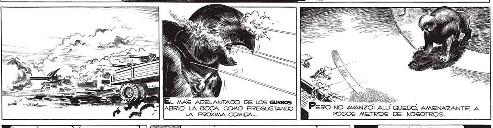
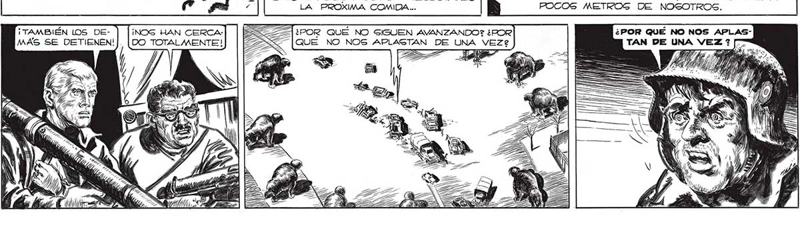

218 El TERROR NOS HIZO DISPARAR CON RAPIDEZ FRENÉTICA, AUNQUE SABIAMOS QUE CONTRA NUESTRO ENEMIGO NADA LOGRARÍAMOS... NS A A AVAND) hi . , Pero no avanzo: ALLI ABRIO LA BOCA COMO PREGUSTANDO LA PROXIMA COMIDA... ¡TAMBIÉN LOS DE- ¡NOS HAN CERCA] | [EE ¿POR QUÉ NO SIGUEN AVANZANDO? ¿POR MAS SE DETIENEN!] [DO TOTALMENTE! |QUE NO NOS APLASTAN DE UNA VEZ?

